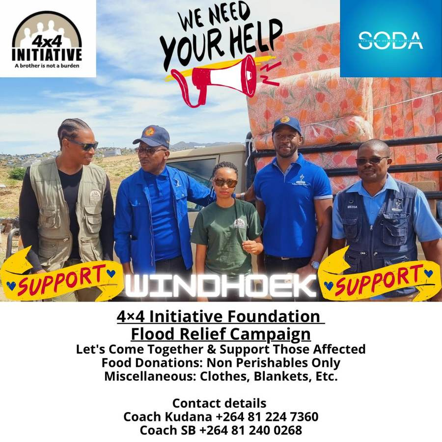
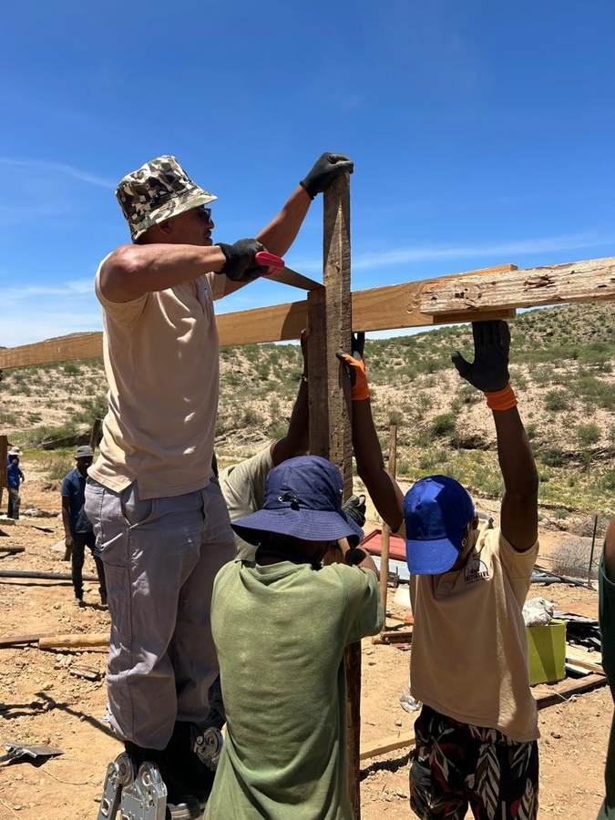
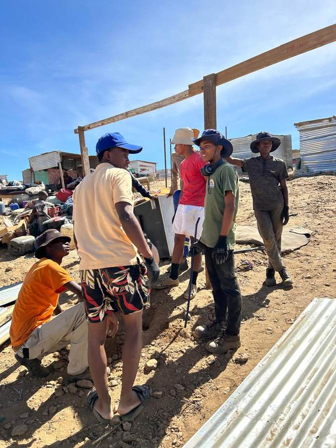
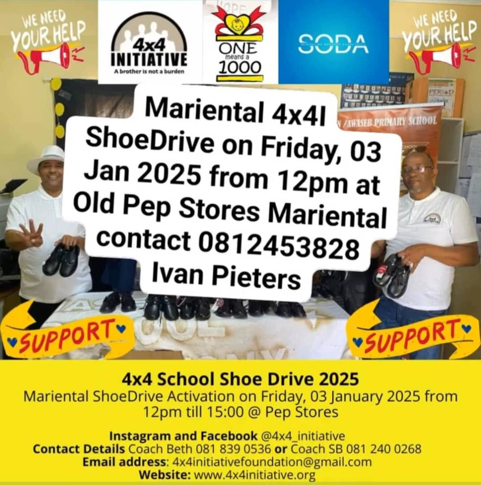
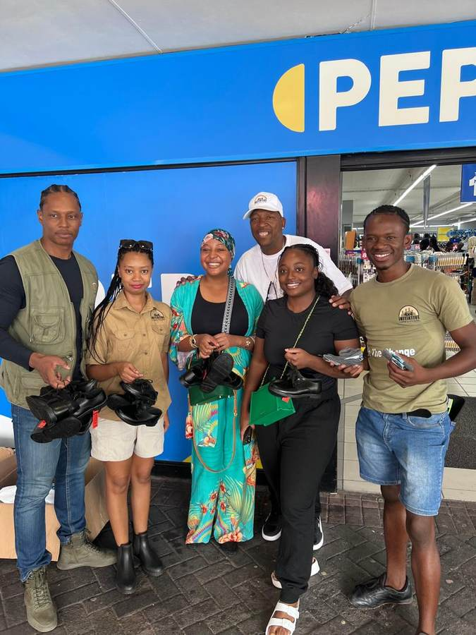
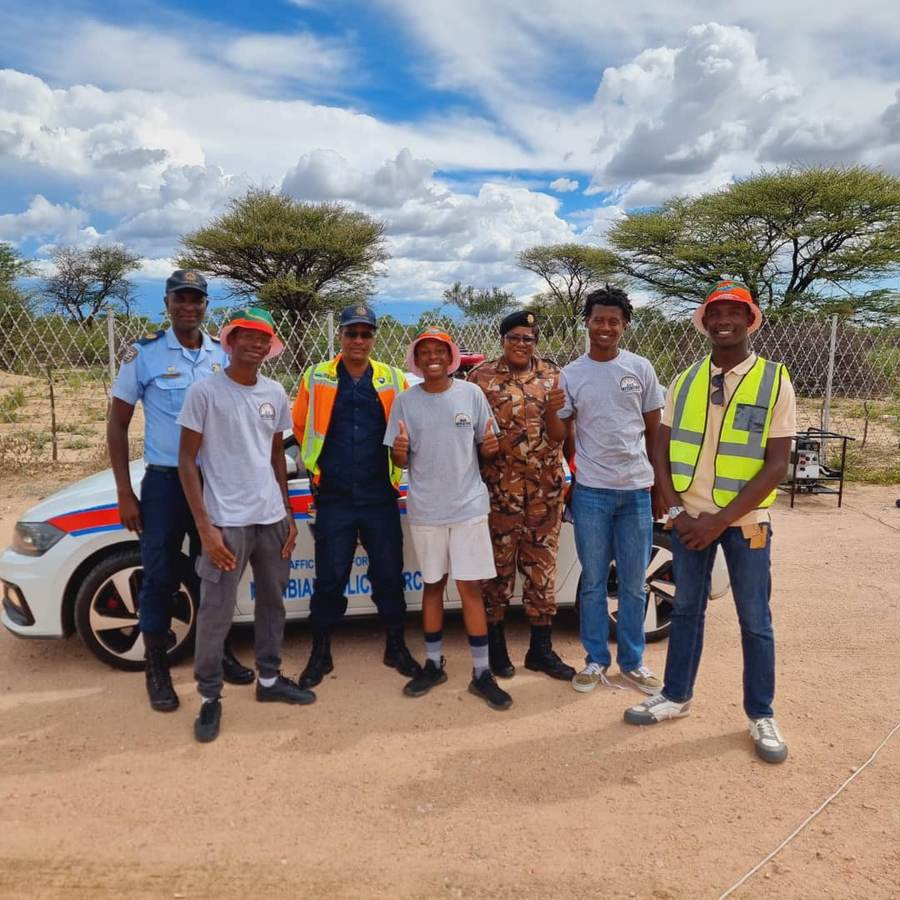
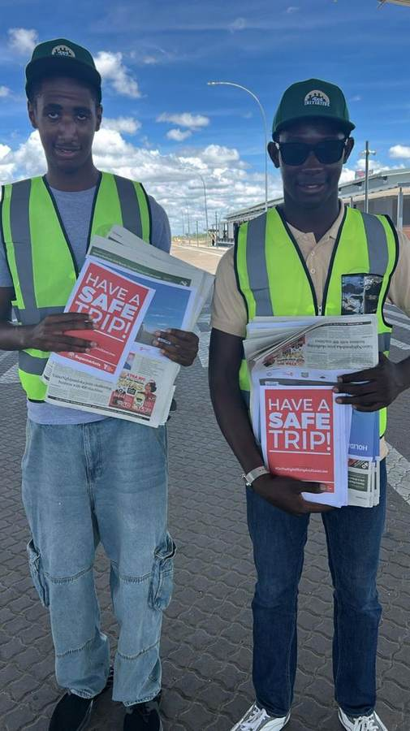

Community Projects
Brotherhood doesn't stop at the camp gate. When Namibian families need help, whether that's a flood, a school shoe shortage, or a house that needs rebuilding, the same coaches and boys who build leaders at Ongeama Farm show up to do the work.
Brotherhood doesn't stop at the camp gate
When floods hit Windhoek's informal settlements, the same boys, coaches and volunteers who build leaders at Ongeama Farm showed up to rebuild homes, because the mentorship model means nothing if it can't carry weight in a crisis.

Windhoek Flood Relief Campaign
Run in partnership with the School of Destiny Associates (SODA), the campaign called on Windhoek to support flood-affected families with non-perishable food, clothing and blankets, then put volunteers to work rebuilding shelter frames on-site.



Annual Shoe-Drive
Every school year starts with a pair of shoes for a boy or girl who wouldn't otherwise have one. The Shoe-Drive runs multiple towns each January, not just Windhoek.

Windhoek + Mariental, Every January
What started as a Windhoek PEP Stores activation has grown into a multi-town push, with a dedicated Mariental leg run out of the Old Pep Stores. This one isn't just for the boy child. Boys and girls both benefit.

Road safety, hand to hand
Boys from the programme partnered with the Namibian Police Force to hand out road safety materials directly to travellers, turning a holiday checkpoint into a teaching moment about responsibility on the road.


Renovation and single parent support
Winning strategies are built on coalitions. The Foundation partners with organisations like the Namibia Correctional Service's Return to Community programme on renovation drives for children's homes, and mobilises Boys Leadership Club members alongside Men's Networks to directly support single-parent households, including families affected by flooding on Farm 508.
Renovation Drives
Run in partnership with the Namibia Correctional Service's Return to Community programme, these drives also open the door to winter blanket collections and ongoing refurbishment work.
Single Parent Support
Boys Leadership Club members and Men's Networks show up directly for single-parent households, putting the Foundation's values into practice through material support and hands-on help.